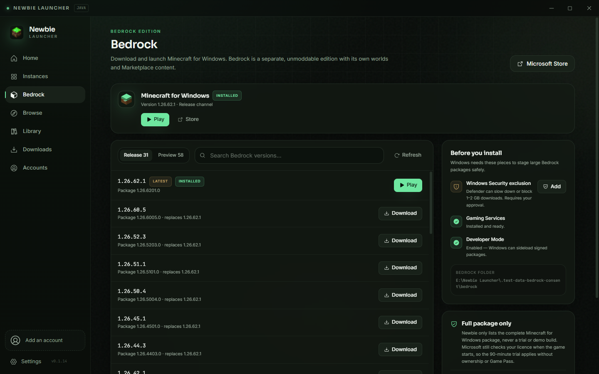
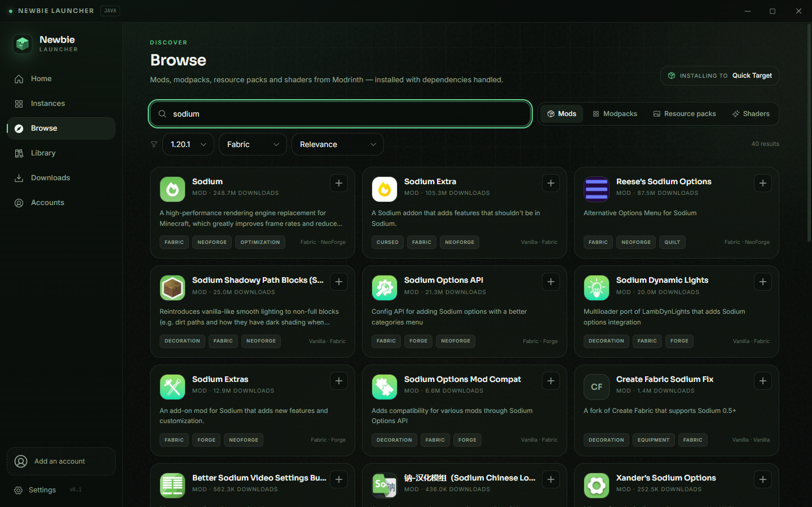

Background downloads, silent installs, release notes in the app and a stable or beta channel.
Loadouts & pack sharing.
Switch full offline backups or download-on-demand sets, then export every enabled add-on as a shareable .mrpack or copy it to another instance.
.mrpack exportCopy to instanceLAN download
Your accounts, your skins.
Microsoft, TLauncher, offline and authlib profiles in one place, with custom skin tools.
MicrosoftTLauncherOfflineAuthlib
Repair, not guesswork.
Find duplicate mods, wrong loaders, incompatible dependencies and missing files — then fix them with a backup first.
Duplicate scanLoader checkBackup first
See the health of your world.
TPS, MSPT, player count and server console in one dashboard. Spot lag before your friends do.
20.0TPS
A quick tour
Three editions of calm.
Click through the parts of the app that usually cause the most pain.
Java Edition
Launch a modded world in seconds.
Accounts, loaders, memory and add-ons are already handled. The active instance card keeps playtime, updates and loadouts visible.
Fabric, Quilt, Forge and NeoForge
Modrinth add-ons and loadouts
World backups before launch
Minecraft for Windows
Bedrock, without the store dance.
Browse release and preview builds, download the official signed package and install through Windows. Each version gets its own security-exclusion check before you play.
Release and Preview channels
Consent-based Defender exclusions
Worlds and Marketplace content preserved

Modrinth inside
Find it. Install it. Keep it updated.
Browse mods, resource packs, shaders, datapacks and modpacks with loader and game-version filters. Newbie resolves required dependencies and repairs conflicts.
Bulk updates and dependency resolution
Hash verification for downloads
Loadout-aware offline backups

Local servers
A server dashboard that speaks Minecraft.
Create a server in one click, then use the console like a pro. Command snippets fill in player names,
coordinates and item IDs for you — and TPS is sampled right next to the log.
Try a command — this is a safe demo, not a live server.
Latest release
v0.1.33 Stable
Newbie Launcher for Windows
The latest stable build, published from GitHub Releases. Installs silently, updates itself, and keeps
worlds, instances, servers and settings untouched.